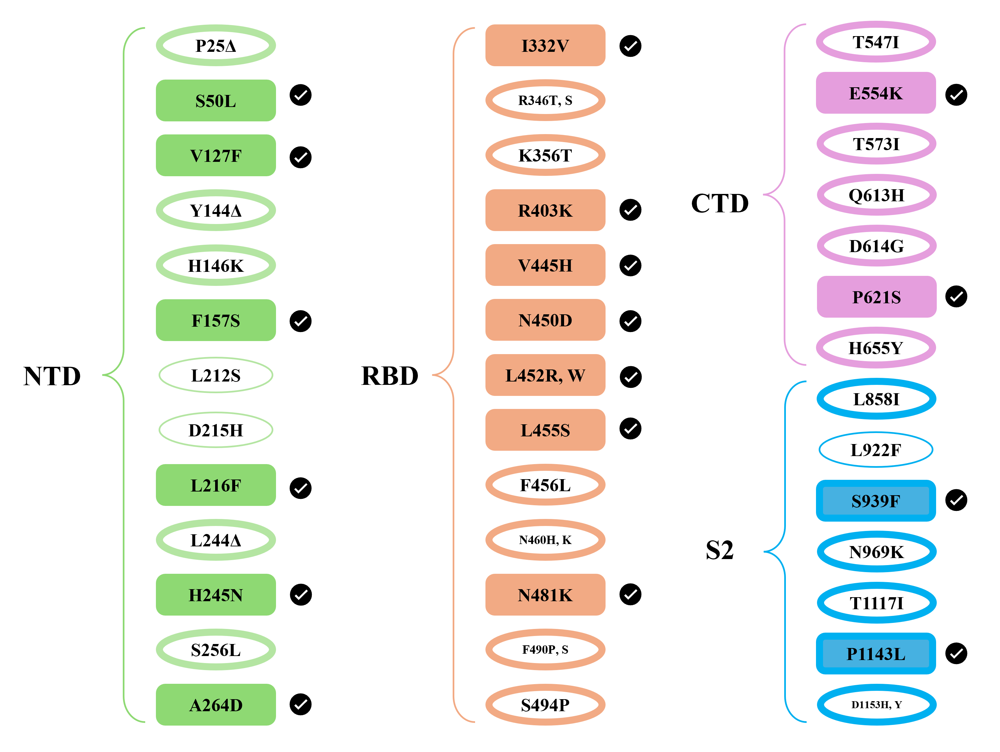
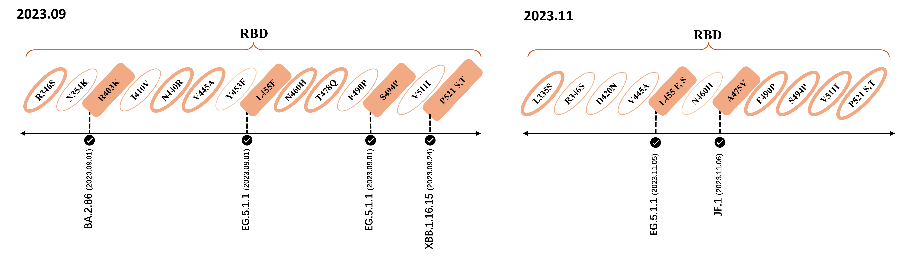
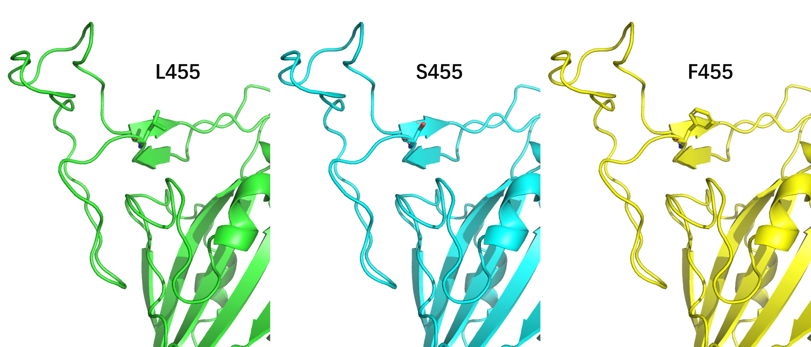

JN.1 Lineage
The JN.1 (BA.2.86.1.1) variant is the most recently dominating SARS-CoV-2 variant descended from the BA.2.86 lineage.
Background
In comparison to the BA.2.86 strain, JN.1 exhibits a notable L455S spike protein mutation, accompanied by three other mutations located in the non-spike proteins. The SARS-CoV-2 BA.2.86 lineage, identified initially in August 2023, differs genetically from the extant Omicron XBB variants such as EG.5.1 and HK.3. Possessing more than 30 spike protein mutations, the BA.2.86 lineage demonstrates a strong potential to circumvent pre-existing immunity to SARS-CoV-2. The JN.1 variant has exhibited a swift increase in its proportion of the global viral variants since November, leading to the World Health Organization's elevation of BA.2.86 from the status of a Variant Under Monitoring (VUM) to that of a Variant of Interest (VOI) as of November 21.
JN.1 Mutations

Featured Mutation: L455S
deLemus captured the L455F mutation in September 2023, which was confirmed by the subsequent EG.5.1.1. In the following November the L455S mutation was also captured. This record can be found on the Update page.
L445

The L455S mutation occurs within the receptor-binding domain (RBD) of the spike protein, a region that is crucial for the interaction with the human ACE2 receptor. Recent reports and studies, such as the one found at bioRxiv, suggest that the RBD harboring this mutation displays a reduced affinity for binding with human ACE2. This could paradoxically enhance the transmissibility of the JN.1 variant, as the mutation may confer an increased ability to evade immune responses elicited by previous exposures to variants such as XBB.1.5 and EG.5.1.
L445S

Main Mutations
JN.1's main mutations in other prevalent variants:
BA.2.86

JN.1 Scientific Summary
| Field | Observation | Significance |
|---|---|---|
| Lineage origin | Descendant of BA.2.86 | Represents a recent Omicron sublineage transition |
| Key spike change | L455S | Located in the receptor-binding domain |
| Functional context | Potential immune escape and altered ACE2 interaction | Relevant for transmissibility surveillance |
References
- 1. WHO tracking SARS-CoV-2 variants: WHO
- 2. JN.1 spike and antigen composition context: WHO
- 3. Virological characteristics of the SARS-CoV-2 JN.1 variant. Lancet Infect Dis 24, e82 (2024).
- 4. Distant residues modulate conformational opening in SARS-CoV-2 spike protein. Proc Natl Acad Sci U S A 118, e2100943118 (2021).